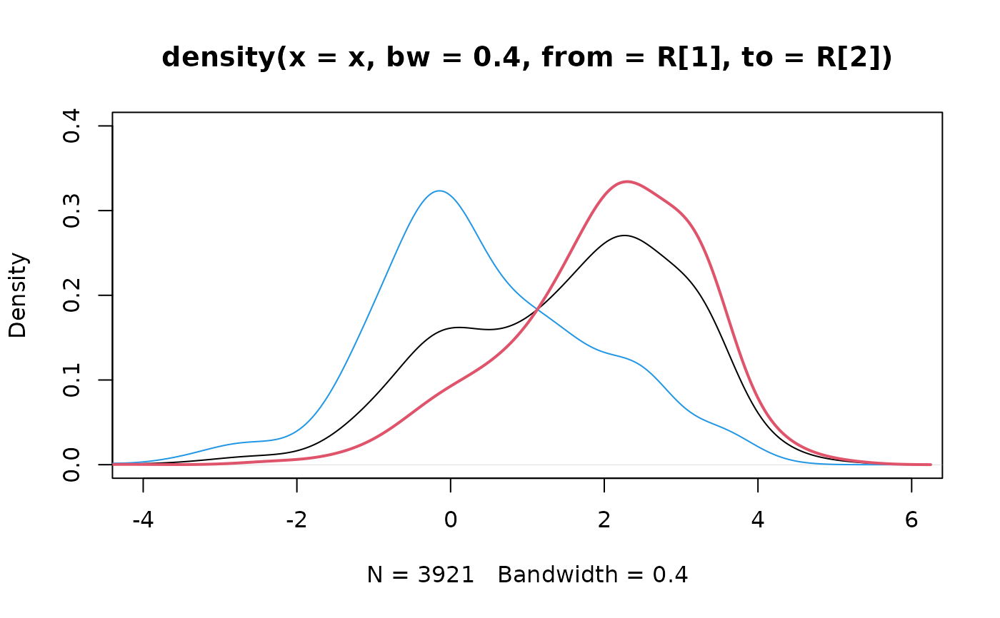

These data represent incoming emails for the first three months of 2012 for an email account (see Source).
Format
A email (email_sent) data frame has 3921 (1252)
observations on the following 21 variables.
- spam
Indicator for whether the email was spam.
- to_multiple
Indicator for whether the email was addressed to more than one recipient.
- from
Whether the message was listed as from anyone (this is usually set by default for regular outgoing email).
- cc
Number of people cc'ed.
- sent_email
Indicator for whether the sender had been sent an email in the last 30 days.
- time
Time at which email was sent.
- image
The number of images attached.
- attach
The number of attached files.
- dollar
The number of times a dollar sign or the word “dollar” appeared in the email.
- winner
Indicates whether “winner” appeared in the email.
- inherit
The number of times “inherit” (or an extension, such as “inheritance”) appeared in the email.
- viagra
The number of times “viagra” appeared in the email.
- password
The number of times “password” appeared in the email.
- num_char
The number of characters in the email, in thousands.
- line_breaks
The number of line breaks in the email (does not count text wrapping).
- format
Indicates whether the email was written using HTML (e.g. may have included bolding or active links).
- re_subj
Whether the subject started with “Re:”, “RE:”, “re:”, or “rE:”
- exclaim_subj
Whether there was an exclamation point in the subject.
- urgent_subj
Whether the word “urgent” was in the email subject.
- exclaim_mess
The number of exclamation points in the email message.
- number
Factor variable saying whether there was no number, a small number (under 1 million), or a big number.
Source
David Diez's Gmail Account, early months of 2012. All personally identifiable information has been removed.
Examples
e <- email
# ______ Variables For Logistic Regression ______#
# Variables are modified to match
# OpenIntro Statistics, Second Edition
# As Is (7): spam, to_multiple, winner, format,
# re_subj, exclaim_subj
# Omitted (6): from, sent_email, time, image,
# viagra, urgent_subj, number
# Become Indicators (5): cc, attach, dollar,
# inherit, password
e$cc <- ifelse(email$cc > 0, 1, 0)
e$attach <- ifelse(email$attach > 0, 1, 0)
e$dollar <- ifelse(email$dollar > 0, 1, 0)
e$inherit <- ifelse(email$inherit > 0, 1, 0)
e$password <- ifelse(email$password > 0, 1, 0)
# Transform (3): num_char, line_breaks, exclaim_mess
# e$num_char <- cut(email$num_char, c(0,1,5,10,20,1000))
# e$line_breaks <- cut(email$line_breaks, c(0,10,100,500,10000))
# e$exclaim_mess <- cut(email$exclaim_mess, c(-1,0,1,5,10000))
g <- glm(
spam ~ to_multiple + winner + format +
re_subj + exclaim_subj +
cc + attach + dollar +
inherit + password, # +
# num_char + line_breaks + exclaim_mess,
data = e, family = binomial
)
summary(g)
#>
#> Call:
#> glm(formula = spam ~ to_multiple + winner + format + re_subj +
#> exclaim_subj + cc + attach + dollar + inherit + password,
#> family = binomial, data = e)
#>
#> Coefficients:
#> Estimate Std. Error z value Pr(>|z|)
#> (Intercept) -0.83623 0.09620 -8.692 < 2e-16 ***
#> to_multiple1 -2.88364 0.31211 -9.239 < 2e-16 ***
#> winneryes 1.70380 0.32539 5.236 1.64e-07 ***
#> format1 -1.59018 0.12387 -12.838 < 2e-16 ***
#> re_subj1 -2.90816 0.37077 -7.844 4.38e-15 ***
#> exclaim_subj 0.13549 0.22682 0.597 0.55028
#> cc -0.48628 0.30542 -1.592 0.11135
#> attach 0.97903 0.21696 4.512 6.41e-06 ***
#> dollar -0.05816 0.15891 -0.366 0.71435
#> inherit 0.20926 0.31969 0.655 0.51275
#> password -1.49295 0.52947 -2.820 0.00481 **
#> ---
#> Signif. codes: 0 ‘***’ 0.001 ‘**’ 0.01 ‘*’ 0.05 ‘.’ 0.1 ‘ ’ 1
#>
#> (Dispersion parameter for binomial family taken to be 1)
#>
#> Null deviance: 2437.2 on 3920 degrees of freedom
#> Residual deviance: 1948.3 on 3910 degrees of freedom
#> AIC: 1970.3
#>
#> Number of Fisher Scoring iterations: 7
#>
# ______ Variable Selection Via AIC ______#
g. <- step(g)
#> Start: AIC=1970.26
#> spam ~ to_multiple + winner + format + re_subj + exclaim_subj +
#> cc + attach + dollar + inherit + password
#>
#> Df Deviance AIC
#> - dollar 1 1948.4 1968.4
#> - exclaim_subj 1 1948.6 1968.6
#> - inherit 1 1948.7 1968.7
#> <none> 1948.3 1970.3
#> - cc 1 1951.0 1971.0
#> - password 1 1960.2 1980.2
#> - attach 1 1967.2 1987.2
#> - winner 1 1972.4 1992.4
#> - re_subj 1 2089.6 2109.6
#> - format 1 2115.9 2135.9
#> - to_multiple 1 2118.7 2138.7
#>
#> Step: AIC=1968.39
#> spam ~ to_multiple + winner + format + re_subj + exclaim_subj +
#> cc + attach + inherit + password
#>
#> Df Deviance AIC
#> - exclaim_subj 1 1948.7 1966.7
#> - inherit 1 1948.7 1966.7
#> <none> 1948.4 1968.4
#> - cc 1 1951.1 1969.1
#> - password 1 1960.3 1978.3
#> - attach 1 1967.7 1985.7
#> - winner 1 1972.4 1990.4
#> - re_subj 1 2089.7 2107.7
#> - format 1 2116.5 2134.5
#> - to_multiple 1 2119.7 2137.7
#>
#> Step: AIC=1966.66
#> spam ~ to_multiple + winner + format + re_subj + cc + attach +
#> inherit + password
#>
#> Df Deviance AIC
#> - inherit 1 1948.9 1964.9
#> <none> 1948.7 1966.7
#> - cc 1 1951.3 1967.3
#> - password 1 1960.5 1976.5
#> - attach 1 1967.8 1983.8
#> - winner 1 1973.2 1989.2
#> - re_subj 1 2091.8 2107.8
#> - format 1 2117.2 2133.2
#> - to_multiple 1 2119.9 2135.9
#>
#> Step: AIC=1964.93
#> spam ~ to_multiple + winner + format + re_subj + cc + attach +
#> password
#>
#> Df Deviance AIC
#> <none> 1948.9 1964.9
#> - cc 1 1951.5 1965.5
#> - password 1 1961.0 1975.0
#> - attach 1 1968.0 1982.0
#> - winner 1 1973.9 1987.9
#> - re_subj 1 2094.1 2108.1
#> - format 1 2118.6 2132.6
#> - to_multiple 1 2120.4 2134.4
plot(predict(g., type = "response"), e$spam)
# ______ Splitting num_char by html ______#
x <- log(email$num_char)
bw <- 0.004
R <- range(x) + c(-1, 1)
wt <- sum(email$format == 1) / nrow(email)
htmlAll <- density(x, bw = 0.4, from = R[1], to = R[2])
htmlNo <- density(x[email$format != 1],
bw = 0.4,
from = R[1], to = R[2]
)
htmlYes <- density(x[email$format == 1],
bw = 0.4,
from = R[1], to = R[2]
)
htmlNo$y <- htmlNo$y #* (1-wt)
htmlYes$y <- htmlYes$y #* wt + htmlNo$y
plot(htmlAll, xlim = c(-4, 6), ylim = c(0, 0.4))
lines(htmlNo, col = 4)
lines(htmlYes, lwd = 2, col = 2)
